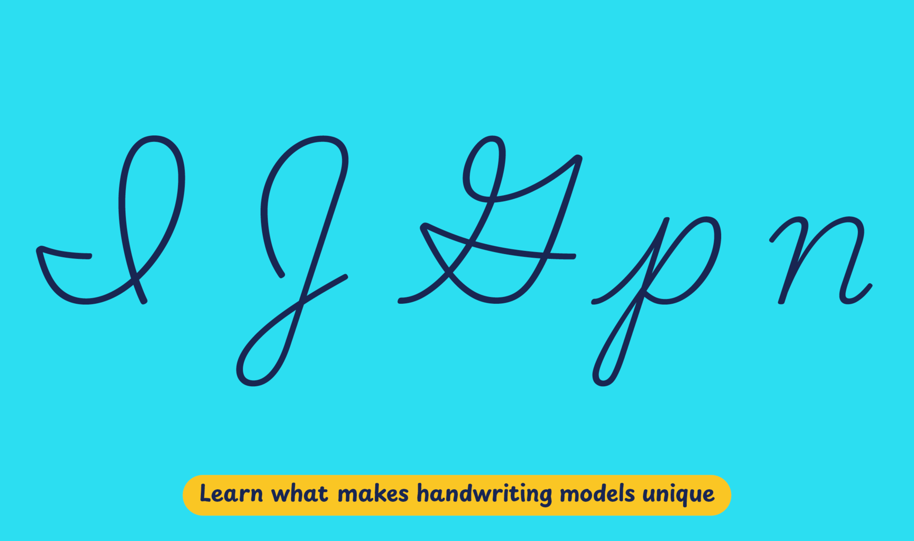

The traditional method of handwriting instruction in Canada is called MacLean’s Method of Writing, and was developed by educator Henry Boyver MacLean in the mid-20th century. Building upon letter shapes devised by Austin Norman Palmer in the United States, MacLean introduced several changes to suit the needs of school instruction, such as modifications to teaching methods and the addition of motor preparation exercises. Even though MacLean’s books have not been used in Canada for several years, his letter shapes survive in schoolbooks published by regional governments and private publishing houses. They are widely used in the majority of Canadian primary schools.
Playwrite Canada is a variable font with a weight range from Thin (100) to Regular (400), and supports over 150 Latin-based languages.
To contribute, see github.com/TypeTogether/Playwrite.
This slanted continuous cursive style is influenced by the Zaner-Bloser and D'Nealian models. It includes cursive uppercase letters, with some particularly intricate ones like 'I', 'J', and 'G'. The lowercase letters feature medium-length extenders with loops, which are consistent even in letters like 'p' and 'q', and are constructed using medium-speed strokes. Additionally, several lowercase letters such as 'm', 'n', 'v', 'w', 'y', and 'z' start with curved entry strokes at the x-height.

Playwrite Canada appears in font menus with a two-letter country code ‘CA’,
Playwrite CA, and features four styles: Thin, ExtraLight, Light, and
Regular.
The download .zip file includes the variable font and standard static ttf fonts
for each style.
The Playwrite school fonts are based on the findings of Primarium, a groundbreaking educational effort that documents the history and current practice of handwriting models taught to primary school students worldwide. This typographic engine serves teachers, educators, and parents by generating localized libre fonts. These Playwrite fonts are complemented by Playpen Sans, an informal and fun typeface designed for annotations, instructions, and student notes – that also includes emojis.
For more information about the Primarium project, visit primarium.info and to learn more about handwriting education in Canada, see primarium.info/countries/canada.
Windows: Download the font file to your computer. Navigate to where you saved the font file and double-click it to open. Click the "Install" button at the top of the font preview window. The font is now installed and ready to be used across your apps.
macOS: After downloading the font file to your Mac, right-click it in Finder and select "Open With" > "Font Book". Then, click "Install Font" in the font preview window that pops up. The font is now installed and ready to be used across your apps.
The Playwrite font family uses complex OpenType features to generate connected writing. Some common applications require these features to be manually activated.
Note: This font family doesn't include Bold or Italic styles, so please avoid applying them in text editors. If you use the common 'B' and 'I' buttons, you will automatically generate low-quality styles.
Google Docs and Slides: From the font selector drop-down, go to "More Fonts" and search for the desired font name, in this case, "Playwrite CA", and click OK. If some text is already selected, the font choice will apply.
Microsoft Word: Go to Format in the Menu bar, select Font, and then the Advanced tab. Activate "Contextual Alternates" and "Kerning for fonts below" to apply these settings to all text sizes.
LibreOffice: In macOS, to select the different styles, go to Format in the Menu bar, select Character, and use the Typeface menu.
Adobe InDesign: Open the Paragraph Panel and select Adobe "World-Ready Paragraph Composer" from the contextual menu.
Adobe Illustrator: Navigate to Preferences > Type, check the "Show Indic Options" box, and close preferences. Then open the Paragraph Panel and select "Middle Eastern Composer" from the contextual menu.
Adobe Photoshop: Access the Paragraph Panel, then choose "World-Ready Layout" from the contextual menu.
The above instructions are also available in PDF format here.